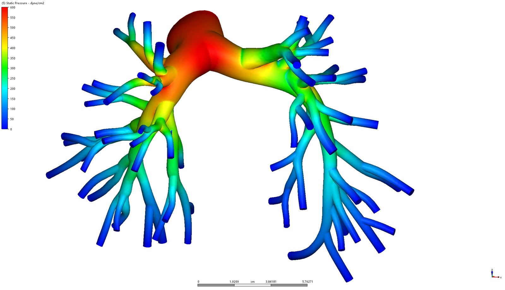

← Alle Projekte
Hämodynamische CFD-Studie einer Lungenarterie
FAU
Eigenprojekt, unterstützt von der FAU | 06/2026 | Eigenständige Studie
Vom MRT-basierten Modell zum flexiblen Druck

Was?
- Persönliches Interesse: Wie fließt Blut durch einen verzweigten Gefäßbaum, und kann aus der simulierten Geometrie auch ein physisches Modell werden?
- Geometrie: MRT-basiertes Modell einer menschlichen Lungenarterie, nach Tang et al., Annals of Biomedical Engineering (2011).
Wie?
- Gefäßbaum in Autodesk CFD vernetzt und mit einer vorgegebenen Einlassgeschwindigkeit von 10 cm/s simuliert.
- Druck, Geschwindigkeit, Wandschubspannung und Wirbelstärke ausgewertet.
- Gefäß per SLA aus flexiblem Harz (Flex 82A) gedruckt, mit Unterstützung der FAU beim Druck.
Ergebnisse
- Der Druck fällt von der Hauptarterie bis zu den distalen Ästen um ca. 550 dyne/cm².
- Die Geschwindigkeit steigt in engen Ästen auf ca. 30 cm/s; die Wandschubspannung ist an den Verzweigungen am höchsten (ca. 20 dyne/cm²).
- Die Simulationsergebnisse wurden nicht mit Messungen verglichen.